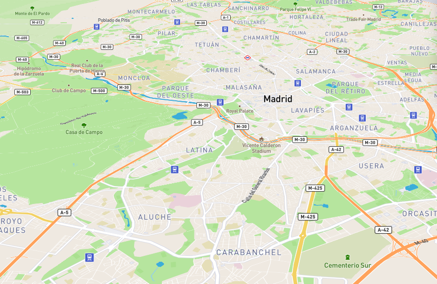

5.00 am
Buenos días, Madrid
Madrid se despertó el 20 de septiembre como cualquier día. Desde las 5:00 de la mañana, Instagram se llenaba de usuarios compartiendo fotografías de desayunos y, progresivamente, la actividad de los usuarios de las redes sociales iba mostrando cómo el centro de la ciudad se llenaba de actividad.
Mientras tanto, el tráfico circulaba por las venas de la M40 y la M30 y lanzaba al aire unas pequeñas partículas de dióxido de nitrógeno. Tan pequeñas que el viento las esparcía por el aire. Mientras tanto, en las redes sociales, crecía la expectación por el concierto de Maluma y el partido en el que se enfrentarían el Real Madrid y el Betis.
GRÁFICO REDES SOCIALES:

11.00 am
Por Ciudad Universitaria, sobre las 11:00 no cabía ni un alfiler en el interior de los autobuses. A pesar de ello, llegaban desde el centro de Madrid y los alrededores de la Comunidad coches con estudiantes y profesores. Mientras la M40 mostraba una densidad estable, el centro de la ciudad fue llenándose de vehículos progresivamente a lo largo de la mañana.
La alarma la dieron las estaciones de medición de Calidad del Aire (ICA) a las 17:00 de la tarde. Los puestos situados en Plaza España y Ramón y Cajal registraron CIFRA, una cifra que roza el límite fijado por la Unión Europea y otro que lo sobrepasa completamente.
 Madrid respira dióxido de nitrógenoCiudadanos se concentraban en Sol a las 19:00 para pedir al Gobierno español solidaridad con el proceso soberanista de Cataluña. Una de las maneras de acceder a la plaza es a través de la Gran Vía, que comienza en la Plaza de España. A esa hora, en las líneas cercanas circulaban X personas.
GRÁFICO DE CALOR EMT:
El dióxido de nitrógeno forma parte de una serie de contaminantes gaseosos que se producen a partir de procesos de quema de combustibles fósiles. El que respiramos ha salido de las chimeneas de las viviendas, las industrias y, sobre todo, las emisiones de los tubos de escape.
Xavier Querol (https://twitter.com/xqcgeo), geólogo e investigador especializado en contaminación atmosférica, destaca que la presencia de centrales térmicas en una ciudad puede ser un factor muy importante, pero el tráfico rodado es al final el más próximo al ciudadano.
Madrid, rodeada por el noroeste por la sierra de Guadarrama, es una región sensible a anticiclones. Cuando hay una inversión térmica, el aire caliente de la parte superior impide que el aire frío suba. “Con las emisiones antropogénicas – de origen humana – el efecto es como la una tapa de una olla. Tú estás hirviendo el agua y salen humos. Si no le pones la tapadera a la olla los contaminantes se escapan. En el momento en que la pones, la concentración es mayor”, representa Querol.
IMAGEN DEL ANTICICLÓN:
Según la Organización Mundial de la Salud, la exposición a partículas, al ozono (O3), dióxido de nitrógeno (NO2) y dióxido de azufre (SO2) conlleva graves riesgos sanitarios. El dióxido de nitrógeno y el dióxido de azufre pueden tener influencia en el asma, los síntomas bronquiales, las alveolitis y la insuficiencia respiratoria. El ozono es un importante factor de mortalidad y morbilidad por asma y según Querol, una de las grandes razones para atacar el problema de la emisión de NO2, ya que al entrar en contacto con la atmósfera contribuye a su formación. Según estimaciones de la organización de 2012, la contaminación atmosférica en las ciudades y zonas rurales de todo el mundo provoca cada año 3 millones de defunciones prematuras. Solo el 87% se dan en países de ingresos bajos y medianos, con una mayor carga en el Pacífico Occidental y el Asia Sudoriental.
¿Hacia un futuro con menos coches?Alrededor de las 20:00, un gran flujo de personas se dirigían hacia el Palacio de los Deportes, que llegó a acoger hasta 13.500 asistentes. Mientras tanto, el Estadio de Santiago Bernabeu, se preparaba para acoger el enfrentamiento entre el Real Madrid y el Real Betis. El monumento, con una capacidad de aforo de 81.044 espectadores, se encuentra a apenas unos pasos de la estación de Ramón y Cajal, una de las que dieron la alarma por alta concentración de NO2.
En el #Bernabéu #RealMadridRealBetis #LaLiga 🏆🇪🇸⚽️ cobertura para @cracks_oficial 🎥💻🎙 pic.twitter.com/YFpHGKWquM
— Nicolás Gómez Sañudo (@NicoGomez7) 20 de septiembre de 2017
PÁRRAFO CON MEDIDAS DEL AYUNTAMIENTO
PÁRRAFO CON MEDIDAS DEL AYUNTAMIENTO: PUNTO DE VISTA DEL INVESTIGADOR
GRÁFICO 5 DE LA PROPUESTA COMPARACIÓN AUTOBÚS/COCHES
Párrafo de conclusión